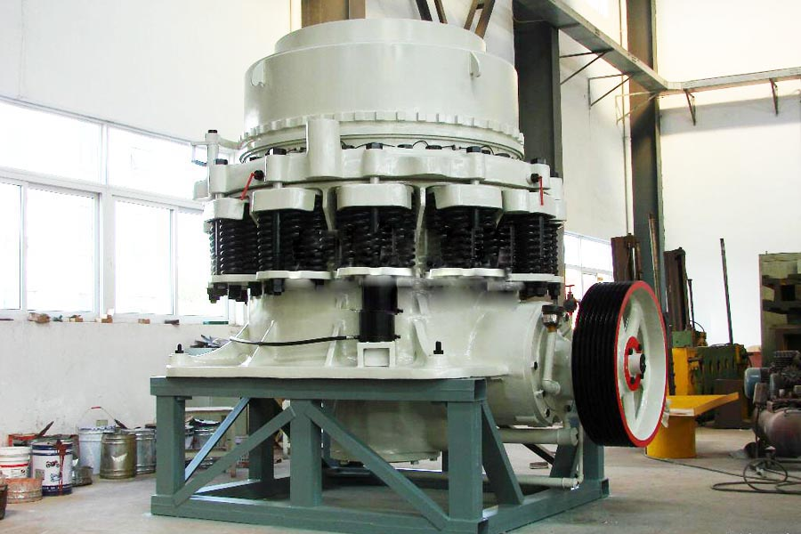
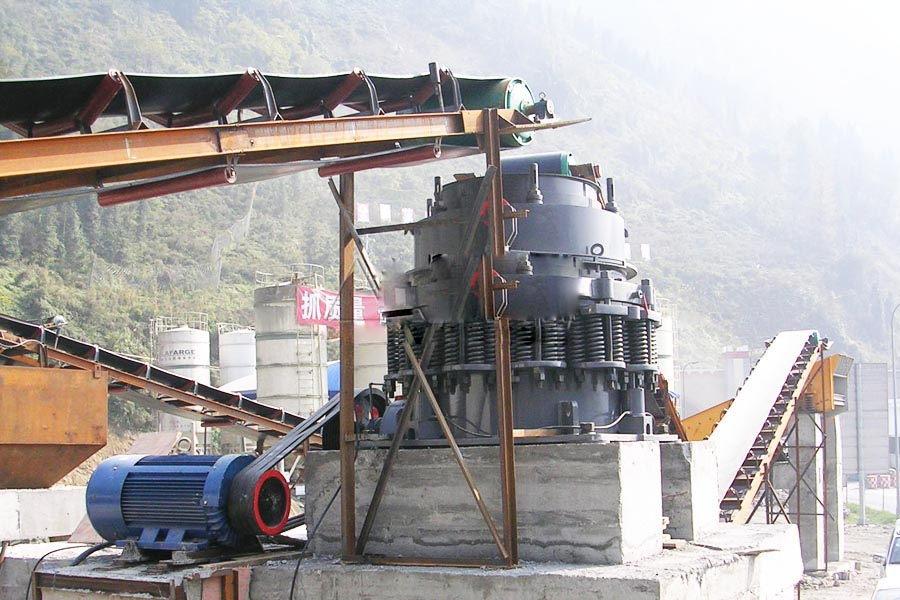

- Home >
- stone crusher >
- cone crusher in germany

Construction waste crushing production line

Mobile construction waste crushing station for urban construction waste crushing.
cone crusher in germany
cone crusher in germany Introduction
Cone crusher is recently developed an advanced high-power, large crushing ratio, high productivity hydraulic crusher. The aircraft is in the digestion and absorption of various countries on the basis of having developed into the 1980s the international advanced level of various types of cone crusher on. It is the traditional structure of the cone crusher is clearly different in design, and focus on the main advantages of hitherto known various types of cone crusher. Suitable for fine crushing and superfine crushing hard rock, ore, slag, refractories. Cone crusher is also divided into several types, including spring cone crusher, CS Series High-efficiency spring cone crusher, HPC hydraulic cone crusher and HCS efficient hydraulic cone crusher.

Cone Crusher Features
1. dynamic cone continuous rotation, crushing process and unloading process of materials alternately along the work surface continuously high productivity.
2. The material sandwiched between two cones, squeezed, bending and shear, broken more easily, power consumption is low.
3. Product Liaodu relatively uniform, cube shape, work wear moving cone surface more uniform.
4. Structure Introduction, cone crusher main frame structure, the horizontal axis, moving cone, balancing wheel, eccentric, the broken wall (fixed cone), the next broken wall (dynamic cone), hydraulic coupling, lubrication several parts system, hydraulic system, control system.
5. The dynamic cone and fixed cone are upright, when moving cone swings in the vicinity of the crushing chamber discharge port, there is a gap between parallel strips of equal dynamic cone and fixed cone, the finished Liaoduo uniform. Inlet size small, it is able to handle after the first broken material.
6. This series cone crusher dry oil or water in two ways sealed so dust and impurities can not enter the man-machine body, thus ensuring clean Run edible vegetable oil, extending the slide bearing, thrust ball bearing service life, making the machine reliable operation.
Cone Crusher technical parameters
| Model |
Hammer Diameter |
Inlet size | The maximum feed size |
Spout Adjustment range |
Processing capacity | Eccentric speed | Power | Weight |
| (MM) | (MM) | (MM) | (MM) | (T/H) | (R/MIN) | (KW) | (T) | |
| PYB600 | Ф 600 | 75 | 12-25 | 65 | 40 | 356 | 30 | 5 |
| PYD600 | Ф 600 | 40 | 2-13 | 35 | 12-23 | 356 | 30 | 5.5 |
| PYB900 | Ф 900 | 135 | 15-50 | 115 | 50-90 | 333 | 55 | 11.2 |
| PYZ900 | Ф 900 | 70 | 5-20 | 60 | 20-65 | 333 | 55 | 11.2 |
| PYD900 | Ф 900 | 50 | 3-13 | 50 | 15-50 | 333 | 55 | 11.3 |
| PYB1200 | Ф 1200 | 170 | 20-50 | 145 | 110-168 | 300 | 110 | 24.7 |
| PYZ1200 | Ф 1200 | 115 | 8-25 | 100 | 42-135 | 300 | 110 | 25 |
| PYD1200 | Ф 1200 | 60 | 3-15 | 50 | 18-105 | 300 | 110 | 25.3 |
| PYB1750 | Ф 1700 | 250 | 25-50 | 215 | 280-480 | 245 | 160 | 50.3 |
| PYZ1750 | Ф 1700 | 215 | 10-30 | 185 | 115-320 | 245 | 160 | 50.3 |
| PYD1750 | Ф 1700 | 100 | 5-13 | 85 | 75-230 | 245 | 160 | 50.2 |
| PYB2200 | Ф 2200 | 350 | 30-60 | 300 | 59-1000 | 220 | 280/260 | 80 |
| PYZ2200 | Ф 2200 | 275 | 10-30 | 230 | 200-580 | 220 | 280/260 | 80 |
| PYD2200 | Ф 2200 | 130 | 5-15 | 100 | 120-340 | 220 | 280/260 | 81.4 |

Cone Crusher works
Cone crusher at work by the eccentric rotation of the motor in the force moving at a fixed point for a spin around a week pendulum movement through the pulley shaft or coupling cone crusher and cone crusher cone section. So that the broken cone crushing wall close to and sometimes leave sometimes being attached to the adjustment sleeve rolling acetabular wall surface, the ore constantly under attack in the crushing cavity, pressing and bending role to achieve the ore crushing. Bevel gear drive motor through eccentric rotation, broken cone pendulum motion for a spin. Sometimes close and sometimes broken cone away from the fixed cone, complete crushing and nesting. Support sleeve and the frame body connection by spring-loaded, when the metal block falls within the crusher can not crush object that is deformed by compression springs discharge foreign matters, realization of insurance, to prevent damage to the machine.
Leave Me A Message, Now
If you have any questions regarding equipment prices, production line configuration or other problems, you can send a message to us, we will contact you soon.